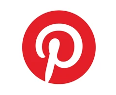

패션 레퍼런스 수집부터 기준 기반 선별까지 자동화한 이미지 리서치 파이프라인. 키워드 입력, 비율 필터링, CLAUDE 프롬프트 기반 평가, 자동 아카이빙 과정을 하나의 흐름으로 실험했습니다.
기능을 나열하는 대신, '왜 만들었고 어떻게 풀었는지'가 한눈에 읽히도록 흐름을 설계했습니다.
패션 제안서와 무드보드 제작에서 중요한 것은 이미지를 많이 찾는 것보다, 활용 가능한 이미지를 빠르게 정리하고 선별하는 과정이었습니다.
키워드 입력, 이미지 수집, 비율 필터링, AI 평가, 자동 폴더링을 하나의 이미지 리서치 흐름으로 연결했습니다.
Python 기반 크롤링과 이미지 비율 판별, CLAUDE 프롬프트 평가를 결합해 수집 이후의 반복 구간을 자동화했습니다.
Pinterest는 패션 영감 탐색과 시각 검색이 활발한 플랫폼입니다. 하지만 실제 제안서와 무드보드 제작에서 필요한 것은 단순하게 많은 이미지를 찾는 것이 아니라, 활용 목적과 프로젝트 기준에 맞는 이미지를 빠르게 정리하고 선별하는 과정이었습니다.

이 시스템에서 프롬프트는 고정 명령어가 아니라, 프로젝트마다 바꿔 끼울 수 있는 이미지 평가 기준입니다. 브랜드·시즌·제안 목적에 따라 평가 항목을 바꾸면, AI는 같은 구조로 이미지를 점수화하고 이유와 태그를 반환합니다.
브랜드 DNA, 시즌, 이미지 수집의 목적, 참고해야 할 이미지 방향을 입력합니다.
실루엣, 컬러, 무드, 비주얼 퀄리티처럼 이미지 판단 기준을 항목화합니다.
활용 가능, 참고용, 제외 등 선별 기준을 점수로 환산할 수 있게 설계합니다.
점수, 이유, 태그를 고정 형식으로 반환해 이미지를 수집하고, 폴더링과 아카이빙을 진행합니다.
이 프로젝트는 크롤링 툴 제작 자체보다, 패션 레퍼런스 리서치에서 반복되는 수집·정리·선별 과정을 하나의 AI 워크플로우로 재구성한 경험입니다. 완성된 결과물보다, 어떤 문제를 자동화할지 정의하고 프롬프트를 평가 기준으로 설계해본 탐구 과정에 초점을 두었습니다.